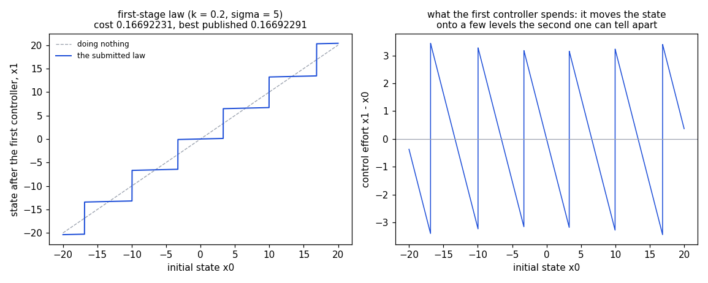

witsenhausen-classic-record
Witsenhausen's counterexample · solved 2 of 2 agent attempts pass
more
The grader computes the exact cost of the submitted first-stage law. Measured, not hard: the naive baseline (four sloped steps per side, 11 numbers, scipy Nelder-Mead and Powell against the grader at reduced resolution) reaches this rung within its first Nelder-Mead round (67 s) and ends at J = 0.16692282 after ten minutes, below the published record; an independent quadrature of that law gives 0.1669228225. The published values of 2011-2014 were not converged. Our own reference, 0.16692231, comes from a staircase with a level at zero; nothing on this instance separates a careful numerical optimisation from the literature.
Gate. per-seed success is the `record_level` rung of this benchmark's ladder ['beats_affine', 'beats_two_point', 'below_0p20', 'below_0p170', 'below_0p1675', 'record_level', 'below_record'] (`--success-mode record_level`), not the evaluator's default flag; the task is solved when the success rate over the grader's held-out seeds is `>= 1`
Axes: family:synthesis, problem:witsenhausen, instance:k0.2-sigma5, gate:record_level, incumbent:best-published-0.16692291, grading:exact-cost-no-rollout
Each video or figure re-runs the attempt's final controller through the task's own evaluator on a public seed (never the grader's held-out ones). The table under each one is the official grade on the held-out seeds.


base| criterion | graded | needed |
|---|---|---|
| base:record_level | 1.000 | ≥ 1.000 |
The agent's final message
The controller in `/app/work/controller.py` passes every rung, including `below_record`, on all 5 visible seeds. It took about 6½ minutes of the 60-minute budget (10:41:26 to 10:47:58). | | J | |---|---| | **My law (seeds 0–4)** | **0.166922311715** | | Gate `record_level` | ≤ 0.16692491 | | Best confirmed published value | 0.16692291 | | Grader's own long-run optimum | 0.16692231 | The cost is the same to 12 digits on every seed. It sits 2.6e-6 below the gate and 6.0e-7 below the published record, so the held-out seeds should pass too: the instructions say a law's cost moves by less than 1e-9 between seeds. **The law** is an odd, slightly sloped staircase, `x1 = sign(x0)·f(|x0|)`: - **Steps:** a central step around 0 (x1 ≈ 0), then levels at about 6.5, 13.3, 20.4, 27.9 and 35.6. - **Jumps:** at |x0| ≈ 3.29, 9.96, 16.87, 24.17 and 31.90. - **Slope:** within each step it is only 0.03–0.035. That slight tilt trades a little first-stage effort against second-stage error. - **Representation:** each step is a degree-6 Chebyshev polynomial, and the central one is written as an odd function so it is continuous at 0. - **Tail:** beyond |x0| = 34, where the probability is about 1e-11, the law is the identity. **How I found the numbers:** I alternated the two stages, each time making one optimal given the other, starting from `x1 = 6.5·round(x0/6.5)`: 1. Compute the second stage `E[x1|y]` for the current law, on the grader's own cells. 2. Replace the first stage, cell by cell, with…
Shown: public seed 0 (base); this episode passes the record_level rung. This episode: valid yes, consistent yes, cost 0.167, gap_to_record -5.98e-07, relative_gap -3.58e-06, stage1_cost 0.135, stage2_cost 0.0321, error_estimate 2.08e-09, n_jumps 12, law_seconds 0.00374. Left: where the first controller moves each initial state. Right: what that costs it. The cost is graded to eight digits.
controller.py · trial witsenhausen-classic-record__KAdujeJ